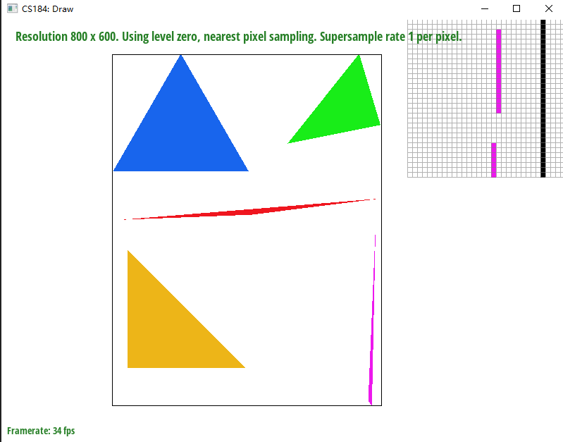
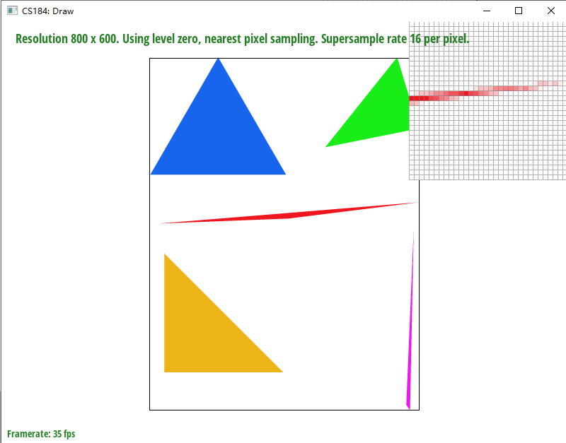
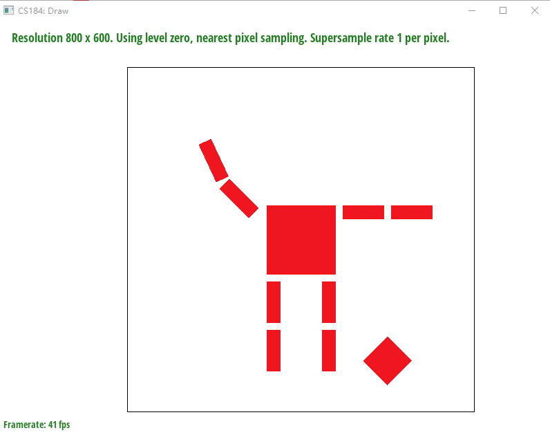
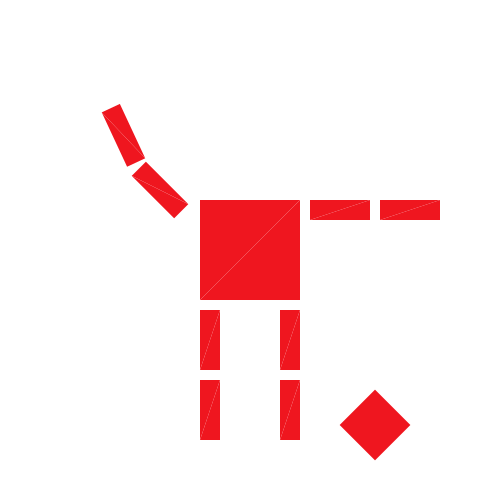
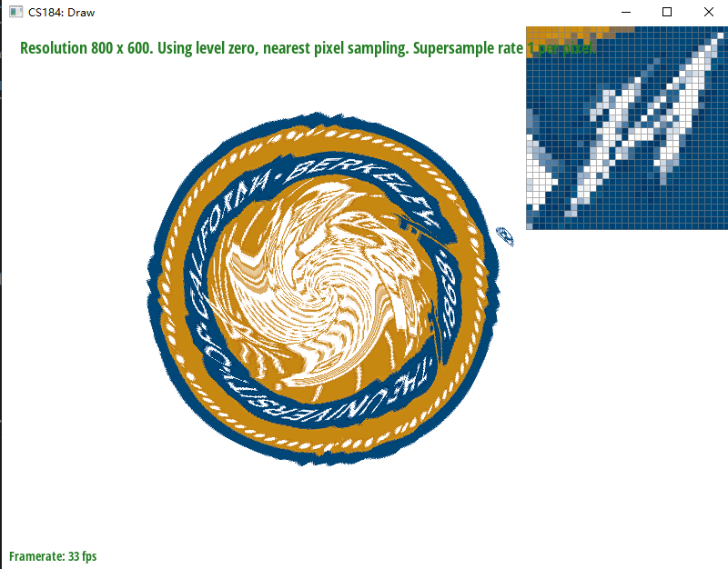
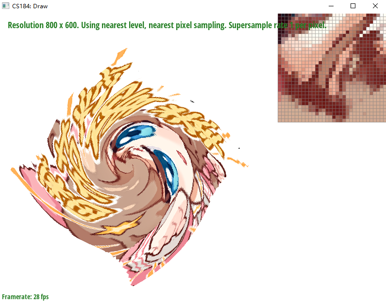
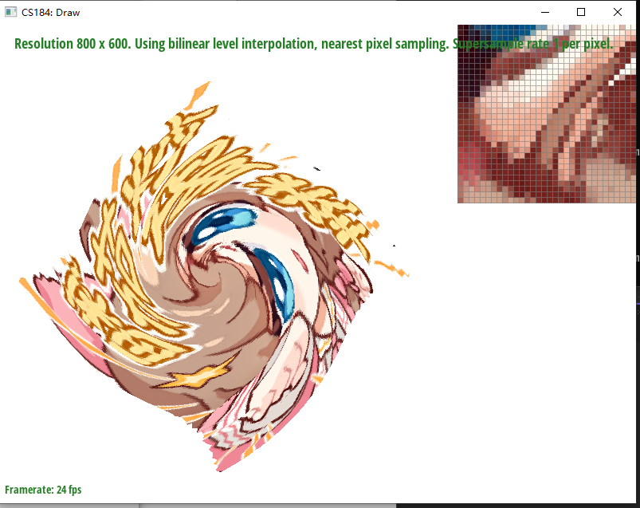
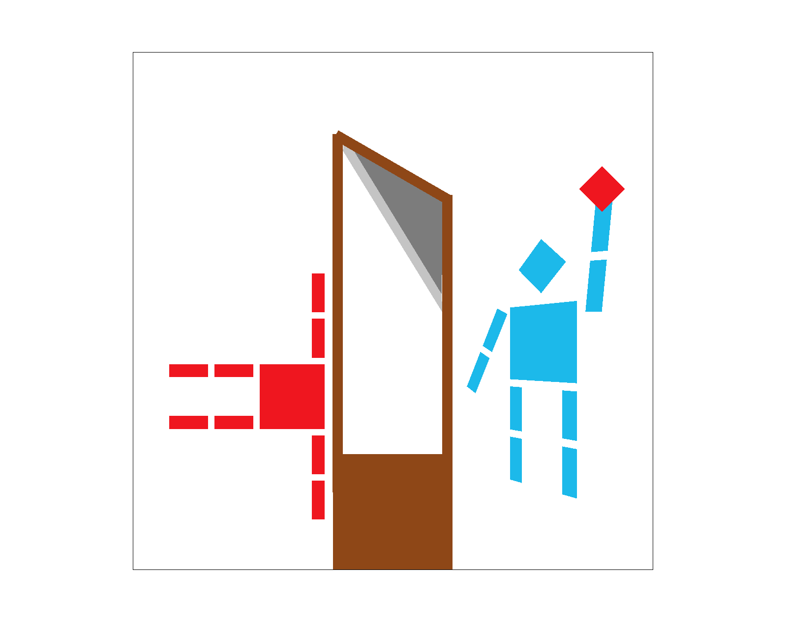
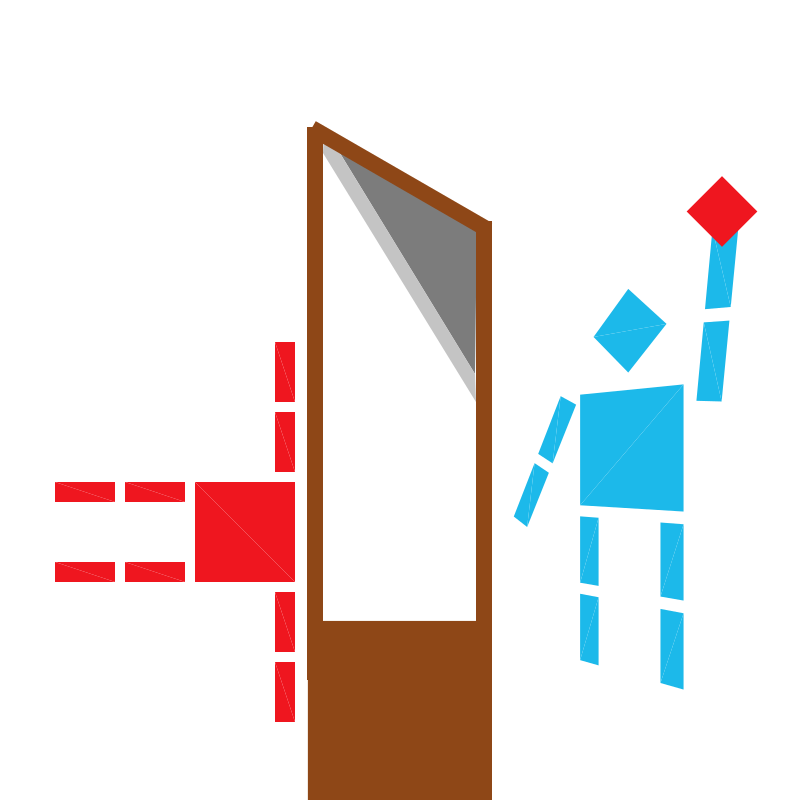

IE9 OR ABOVE AND JAVASCRIPT CAPABILITY IS REQUIRED TO
SUCCESSFULLY RENDER THIS DOCUMENT
HTML5 IS PREFERABLE BUT NOT REQUIRED
This site best viewed with Netscape Navigator:
In this project, a simple rasteriser is made. Overall, four main
topics which we learnt are involved and used: point-in-triangle test
(for task 1 and task 2), homogeneous coordinate systems and
transformations within (task 3), and barycentric coordinates (for task
4, 5, 6), and texture filtering/mipmap (for task 5, 6).
Overall, in all tasks expect task 3 (which is mainly linear algebra), we
do two things: determine if a point in buffer, which depends on
supersampling rate, should be drawed, and if it is to be drawn,
determine what colour it should be.
My task 1 mainly consists the following steps: 1. Find the maximum
and minimum of x and y coordinates, and chop-off out-of-boundary parts
if needed. This determines the bounding box. 2. Construct 3 line
functions as lambda functions, one for x0-x1, one for x1-x2, one for
x2-x0 (order matters). This is inefficient, but it drastically increases
readibility. 3. Loop through every x and y coordinate in the bounding
box, and check if (x + 0.5f, y + 0.5f) is on the same side
(all positive or all negative) of all three lines - we do not need to
care about orientation if we use this test. 4. If they are, call
fill_pixel(x, y, color) to update buffer.
My algorithm is checking each sample within the bounding box of the triangle, so it cannot be worse.
basic/test4.svg
Hopefully this part is interesting!
A lot of modifications are made, they are available in
q1-ec branch.
0. Instead of declaring lambda function, I inlined all point-in-line
expressions. This makes calculations significantly quicker as no
function calls are involved. 1. Instead of calculating
x = xx + 0.5f and vice versa for y, I
initialise x and y and add 1.0f
each time. This is good because int<->float arithmetics is
slow.
2. I outer-loop x and inner-loop y. In inner
loop, if I encountered pixels inside the traingle, and then found one
pixel that is outside of the triangle, break the inner-loop as nothing
beyond is to be rendered. This is useful for triangles like the green
one in test-4. 3. I record the y values when
rendering the first and second verticle (x) line. Then for
each new x value, I pre-calculate which y it
should start scanning from. This is useful for triangles like the
magenta one in test-4. With 2 and 3 combined, the “bounding
box” should look like this:
 I used
I used
std::chrono::steady_clock to measure preformance before and
after optimisations.
| Test | No optimisation | All optimisations |
|---|---|---|
| test-4.svg (triangle 0) | 1166900 | 900900 |
| test-4.svg (triangle 1) | 596600 | 390300 |
| test-4.svg (triangle 2) | 213300 | 171200 |
| test-4.svg (triangle 3) | 1104700 | 860700 |
| test-4.svg (triangle 4) | 73900 | 58300 |
| 05_lion.svg (all) | 50414300 | 40105500 |
The only data structure I used is
std::vector<Color> named sample_buffer
which is also included in skeleton. I made its size
sample_rate times bigger than pixels contained in the
graph.
The algorithm is very simple. Scale everything (width,
height, x0, y0, …) by \(\sqrt{\text{sample\_rate}}\) (which is
guaranteed to be an integer), then write to the sample buffer as if
there’s no supersampling at all. Finally, in
resolve_to_framebuffer, for frame buffer position
x, y, look for all sample buffer position with \(x+x'\) where \(x'=\{0, 1, ...,
\sqrt{\text{sample\_rate}}\}\) and vice versa for \(y+y'\), a total of \(\text{sample\_rate}\) samples. Average them
out to obtain the real colour, and finally write to corresponding frame
buffer.
It antialiases by making sampling frequency higher, thus make Shannon-Nyquist frequency higher, and make HF parts finer.
resolve_to_framebuffer is modified as described
above.fill_supersampled_pixel, is declared and
does exactly the same thing as original fill_pixel.fill_pixel now fills all \(\text{sample\_rate}\) samples in the sample
buffer which the coordinate corresponds to.fill_supersampled_pixel with supersampled coordinate.
Functions that do not supersample needs no modification as they continue
to use fill_pixel.



These effects are observed because more samples are done at sharper
edges (HF parts), resulting in finer edges.
I implemented jittered sampling. Instead of sampling
x = xx + 0.5f, I added
std::default_random_engine and
std::normal_distribution<float>(0.5f, 0.5f / 3.0f) to
the rasteriser, which, when called, can sample from \(X~\mathcal{N}(0.5, \frac{0.5}{3})\), a
normal distribution. \(\sigma=\frac{0.5}{3}\) is chosen such that
samples beyond \((0, 1)\) is unlikely,
but there are additional checks to ensure sample is taken from the
subdomain. It works with supersampling. See branch
q2-ec.
The results are shown below. When the sampling rate is low
(rate=1), jittered sampling is not ideal as it adds
jaggies; when sampling rate is medium (rate=4), it is ideal
as it adds more smoothness (as it adds probability in either the sampled
point is in triangle or out, and supersampling smoothes out jaggies);
when sampling rate is high (rate=16), there isn’t much
difference since supersampling does most job. The test file is
.\svg\basic\test4.svg
| Sampling Rate | Original | Jittered |
|---|---|---|
| 1 | ||
| 4 | ||
| 16 |
I simply copypastaed matrices here: https://cs184.eecs.berkeley.edu/sp22/lecture/4-26/transforms
and multiply them. Only thing to note is that std::sin
takes in radian instead of angle, so some conversion is needed (see
transforms.cpp:38-39). 
This is a picture of a decapitated cubeman (instead of a robot, this is
Robespierre!) who is still waving. I used translate on its
head and translate with rotate on its right
arm.

I added a feature to rotate the camera when pressing Q
and E in branch q3-ec.
You can use this
link to download if you are running Netscape 3.0.
Barycentric coordinates is basically representing how a point in a
triangle’s relative position/relative distance to each vertex is. We can
then see how much “influence” each vertex can give to that point, or map
two triangles given 3 vertices between one and another.

In this example, points to the right are relatively closer to the
rightmost vertex (coloured red), and thus they are “influenced” by red
more and are mostly coloured red.

Basically, given three coordinates in uv plane,
determine which point in texture space a barycentric coordinate which we
calculated from a point in triangle in screen space corresponds to, and
get the colour we need from the texture.
My implementation is to first get barycentric coordinates, then multiply
them with \(u_0, u_1, u_2\) and \(v_0, v_1, v_2\) accordingly. This should
get us the corresponding texture space coordinate.
Then we need pixel sampling method to get the actual colour. For nearest
sampling, I round both u and v to nearest
integer, and then sample colour from texture. For bilinear sampling, I
first check if u and v are integer, and decide
if I should directly sample the point or use linear sampling. If they
are not, I round up and down u and v, get
colour from u, v’s four nearest neighbours, then
interpolate them with lerp() function to obtain the colour
for u, v.
Nearest at 1: 
Bilinear at 1: 
Nearest at 16: 
Bilinear at 16: 
Essentially, we calculate the norm of “stretch” vector (\(\frac{\partial (u, v)}{\partial x}\) or
vice versa, in other words, how much difference are there in
texture space when there’s 1 unit of difference in screen space), and
choose the best mipmap level that minimises aliasing given the
“stretch”. I simply calculated \(\frac{\partial (u, v)}{\partial x}\) and
\(\frac{\partial (u, v)}{\partial y}\)
as instructed in the spec (rasterizer.cpp:227-241), and
used them to calculate \(L\) as shown
here.
I will be like aPple and use “fastest”, “faster” and “fast”, but in reality they mean “fast”, “medium” and “slow”.
| By… | Selecting Pixel Sampling | Level Sampling | Number of Samples per Pixel (Supersampling) |
|---|---|---|---|
| Speed | Fastest (no additional ops) | Faster (need calculate \(L\) and
access std::vector) |
Fast (need to sample much more pixels and downsample) |
| Memory Usage | Smallest (no additional memory cost) | Small/Smaller (need to store mipmap in memory, may be ideal if there’s few textures and big sample buffer) | Small/Smaller (need to store a much bigger sample buffer, may be ideal if there’s a lot of textures) |
| Antialiasing power | High (only antialiasing is to take off your glasses) | Higher (transition between mipmaps and other issues) | Highest (directly change Shannon-Nyquist frequency) |
Pic: 
| Level | Nearest | Bilinear |
|---|---|---|
| Zero |  |
 |
| Nearest |  |  |
| Linear |  |  |
I implemented anisotropic filtering in branch
q6-ec-anisotrophic. It solves pictured like this where
partial derivative of x and y differs drastically.
“Execution of Louis XVI”


I made it with Adobe Illustrator. Illustrator will use
<rect> instead of <polygon> for
rectangles when generating svg files. robot.svg bypassed
this by using two triangles to form a rectangle. I bypassed this by
adding a new anchor point for each rectangle, so Illustrator thought
it’s actually a pentagon.
{kind=link}
{kind=link}
{kind=link}